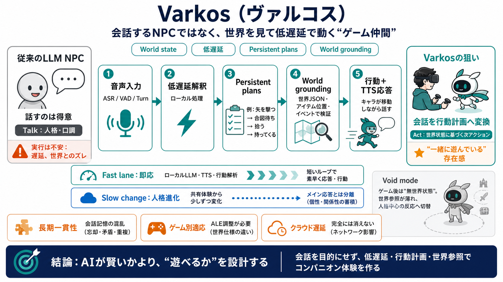

llm-npc-dialogue | Skills Marketplace · LobeHub
A practical design guide and implementation skill for building LLM-powered NPC dialogue that stays in character, remembe…

ゲーム仲間を“同時進行”へ
会話するAI（LLM）を超え、ゲーム世界の状態を参照しながら低遅延で行動する“ゲーム仲間”を目指すプロジェクト。
会話はできる、でも行動が不安
従来のLLM NPCは“役になりきって話す”のは得意でも、“複雑な指示を確実に実行”し“遅延を抑える”のが難しい。
音声から行動へ、低遅延パイプライン
音声入力→低遅延の解釈→行動計画→音声応答を、可能な限りローカルで回し、世界状態に基づいて動く。
“言葉”でなく“台本”ではなく“計画”で動く
複雑な指示を会話のやり取りで完結させず、persistent plansとして分解し、条件イベントで次へ進む。
遅延と“待ち時間”が没入を壊す
VRではメニュー操作や待ち時間が致命的になり得るため、低遅延の音声・応答・解析で発話と行動を近づける。
世界参照＝ワールドエージェンシー
“ワールドエージェンシー（世界を理解し行動へ反映する力）”を強くし、会話でそれっぽく言うより状態検証で動かす。
人格は“別経路”に分離して破綻を減らす
人格進化はリアルタイム経路から分離し、一部はクラウドLLMに依存しつつ、日常的な反応はローカルで成立させる方針。
Void modeで“世界の有無”を設計する
ゲーム終了後は“void mode（無世界状態）”に入り、人格進化に応じて反応が変化する。移植性の橋渡しにもなる。
従来NPCとの差：会話→行動へ重心移動
Varkosの核は応答を“言葉のやりとり”で閉じず、世界状態に基づく行動計画へ落とすこと。
良い点・技術的強み（体験を守る）
VRの負担を減らす設計、ボトルネック特定の音声・推定、そして“全部クラウド化しない”現実的戦略が噛み合う。
制約とリスク：期待値の管理が要る
長期会話の一貫性、ゲーム別適応（ALE側の調整）、クラウドでも遅延が解決しきれない可能性が課題として挙げられている。
“AIが賢いか”より“遊べるか”を設計
Varkosは、行動計画・低遅延・世界グラウンディングで“コンパニオン体験”を組み立てる。今後は一般化と長期一貫性の検証が鍵。
A practical design guide and implementation skill for building LLM-powered NPC dialogue that stays in character, remembe…
Title: Game AI Consciousness: A Technical Architecture for Advanced NPC Behavior - CyberNative.AI - Social Network with …
## What you'll get ▸Character system prompt with personality traits, speech patterns, knowledge boundaries, and emotio…
Generative AI technologies will transform gaming, enabling NPCs to have meaningful interactions with players beyond the …
Modern AI-Powered NPCs : Recent advances integrate machine learning (reinforcement learning, LLMs) for dynamic dialogue…